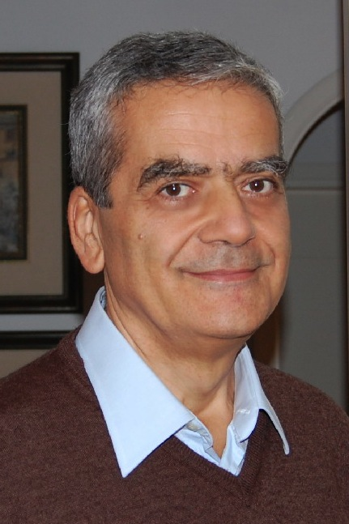

In memory of Luigi Ciminiera

Luigi Ciminiera, Full Professor of Computer Engineering at Politecnico di Torino, Italy, passed away on September 2nd, 2012, aged 58.
Luigi was born in Ortona, a small coastal town and municipality of Chieti in the Italian region of Abruzzo, the son of Maria Lannutti and Arnaldo Ciminiera. He studied Electronics Engineering at Politecnico di Torino and obtained his M.S. cum laude under the guidance of Professor Angelo Serra in 1977. From 1978 to 1983, he held a number of different positions in the Department of ConÂtrol and Computer Engineering at Politecnico di Torino, where he became a Research Assistant in 1983. From 1988 to 1990 he was Associate Professor at the University of Bari, and from 1990 to 1991 Full Professor at the University of L’Aquila. Since 1991 he has been Full Professor of Computer Engineering at Politecnico di Torino. He served as Chair of the Control and Computer Engineering Department from 1999 to 2003 and as Dean of the II School of Engineering at the Politecnico di Torino from 2003 to 2007.
On completing his studies, at the beginning of his professional career, he moved to Torino; however, he kept strong links with his origins and with the city of Ortona where his parents, Arnaldo and Maria, his sister Annapaola with her husband Vittorio and their sons Lidia and Marco all lived. Most years, he spent both his summer vacation as well as the Christmas season with his relatives and his many friends in the quiet of Ortona. In 2005 he was awarded with “Premio 28 Dicembre” from Ortona’s municipality, and in 2008 with “Premio I Rami” from Ortona’s Rotary Club, both for his professional achievements and contributions to Humanity, and for his ethical qualities.
At Politecnico di Torino he founded two research groups, one on computer networks and parallel computing, and the other on computer arithmetic. He guided and mentored the research of a number of students as well as young colleagues. His colleagues were also his friends.
His strong scientific reputation has always been well known in several communities, as well as his exceptional creativity, ingenuity and versatility in different research fields such as grids and peer-to-peer networks, distributed software systems, and computer arithmetic. During his scientific career, he co-authored two international books and made more than one hundred contributions published in technical journals and conference proceedings.
As an “arithmetician” Luigi served together with Neil Burgess as joint Program Chairs of the 14th IEEE Symposium on Computer Arithmetic in 2001. His expertise in computer arithmetic was broad, ranging from addition to multiplication, division, cryptography, parallel and distributed architectures, square root, systolic arrays.
Luigi, we will never forget your smile, your gentle character, your generosity, your advice, your integrity and honesty, your brilliant mind and strong scientific qualities, or your friendship.
This dedication is our wish to say a “thank you” and to tell you that you will be living in our hearts.
Last Updated on June 8, 2018